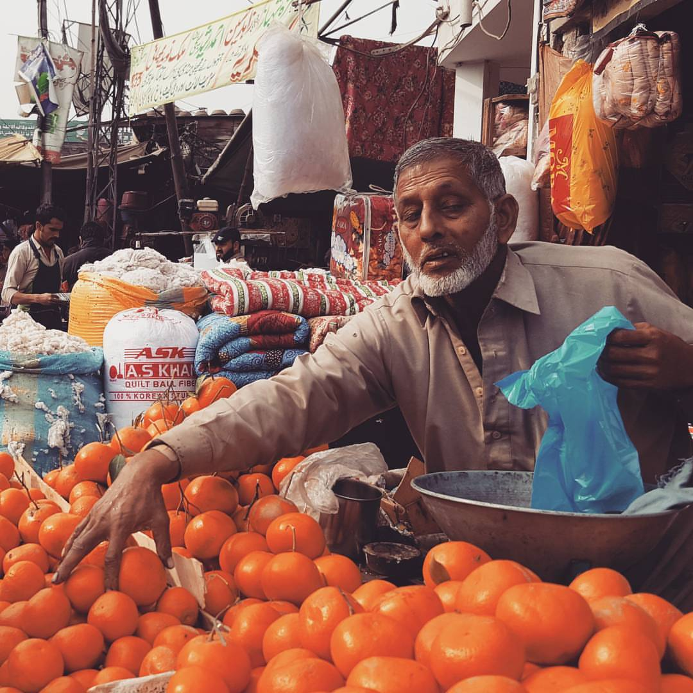

From dotfiles to declarative desktops
How a Linux workstation evolved from shell scripts to NixOS, with agentic tooling and defence-in-depth security.
All writingLead Engineer & Product · Frankfurt
The code teaches patience.
The road teaches wonder.
Both ask you to look again.

I lead at Ginmon — building the quiet financial infrastructure behind people's investments. Microservices, distributed systems, the kind of software that works without being noticed.
Research shaped how I think. Years at the University of Trento studying time series taught me to look for patterns in noise. Working across fintech in Italy and Germany taught me that the hardest problems are rarely technical.
When I'm not building systems, I'm usually somewhere with a camera — not looking for anything in particular, which is usually when you find the best things.
Islamabad · Lahore · Trento · Frankfurt
Custodian bank integrations, AML, KYC, SWIFT, ETF order routing, portfolio evaluation and reporting — the critical infrastructure of modern investing.
How a Linux workstation evolved from shell scripts to NixOS, with agentic tooling and defence-in-depth security.
All writing